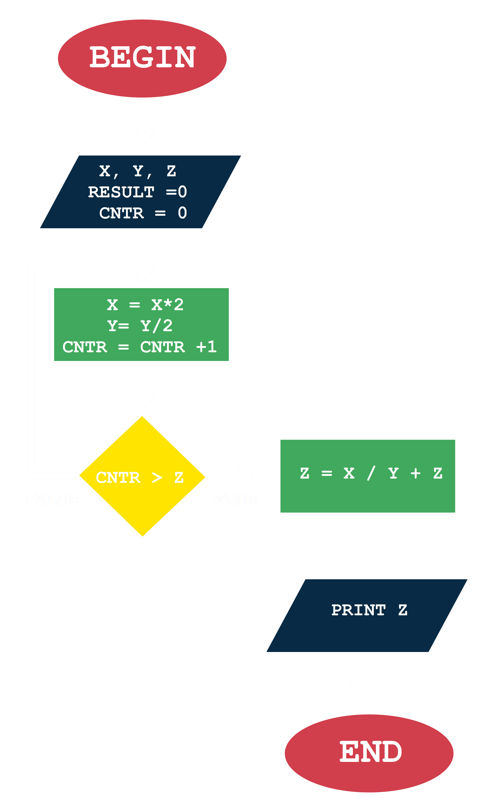

CMSC 11 TUTORIALS
I. Multiple Choice
1. It is a kind of knowledge that is defined as a description of how to do something.
A. Imperative
C. Intuitive
B. Interrogative
D. Declarative
Answer:
A
Imperative
2. It is the precise statement of what the problem is about.
A. Algorithm
C. Specification
B. Program
D. Code
Answer:
C
Specification
3. It is the graphical representation of an algorithm.
A. Algorithm
C. Pseudocode
B. Flowchart
D. Specification
Answer:
B
Flowchart
4. It is the part of a flowchart that is executed whenever there is a condition that needs to be tested.
A.
C.
B.
D.
Answer:
D
5. Which of the following does not refer to a pseudocode?
A. It is close to the English language.
C. It is an informal language.
B. It uses geometric objects.
D. It helps programmers develop algorithms.
Answer:
B
It uses geometric objects.
6. It refers to the tasks to be performed sequentially.
A. Process
C. Decision
B. Terminal
D. Sequence
Answer:
A
Process
1. Get values for x and y.
2. Assign product to 0 and counter to 0.
3. Add x to product.
4. Increment counter by 1.
5. Check if counter is equal to y.
a.If yes, proceed to Step 6.
b.If not, go back to Step 3.
6. Display product.
A. Step 1-6
C. Step 5
B. Step 4
D. Step 1-5
Answer:
C
Step 5
8. It is a phase in programming that produce an algorithm that describes the solution to a problem.
A. Problem Solving
C. Implementation
B. Programming
D. Specification
Answer:
A
Problem Solving
9. It associates a meaning with each syntactically correct string of symbols.
A. Syntax
C. Command
B. Semantics
D. Variable
Answer:
B
Semantics
10. Given the incomplete pseudocode of computing for the remainder of x divided by y by repeated subtraction below, which of the choices would be the best fit for the missing procedure?
1. Get values for x and y.
2. Subtract y to x.
3. __________
4. Display y.
A. Check if x is less than y.
* If yes, proceed to Step 4.
* If not, go back to Step 2.
C. Check if x is less than y.
* If yes, proceed to Step 2.
* If not, go back to Step 4.
B. Check if y is less than x.
* If yes, proceed to Step 2.
* If not, go back to Step 4.
D. Check if y is less than x.
* If yes, proceed to Step 4.
* If not, go back to Step 2.
Answer:
A
11. Given the flowchart below, what would be the result if x = 25, y = 75, and z = 5?
A. 400
C. 406
B. 100
D. 105
Answer:
C
406
12. What is the output of the following line of code?
35 % 5 + 15 * 2 ** 2 / 3
A. 300
C. 20
B. 29
D. 25
Answer:
C
20
13. What part of a while loop prevents it to iterate infinitely?
A. Initialization
C. Range
B. Update
D. Condition
Answer:
B
Update
14. What is the output of the following statements?
x = 2
for i in range(x):
x -= 2
print(x, end=" ")
A. 0 1 2
C. 0 2
B. 0 -2
D. None of the above
Answer:
B
0 -2
15. What is sum after the following loop terminates?
sum = 0
item = 0
while item < 5:
item += 1
sum += item
if sum > 4: continue
print(sum)
A. 15
C. 17
B. 16
D. 18
Answer:
A
15
x = 3
if 2 > x:
print 'Uno'
else:
print 'Dos'
if 2 > x:
print 'Tres'
print 'Kwatro'
print 'Singko'
A. Uno
Dos
Tres
C. Dos
Kwatro
Singko
B. Dos
Tres
Singko
D. Uno
Uno
Uno
Answer:
C
17. Which of the following is true about iteration/looping?
A. A sequence of statements is executed repeatedly until a certain condition becomes true
C. Both a and b
B. When the condition ceases to hold, control is passed to the statement following the last statement of the loop.
D. None of the above
Answer:
B
18. What is sum after the following loop terminates?
sum = 0
item = 0
while item < 5:
item += 1
sum + item
if sum > 4: break
print()
A. 5
C. 7
B. 6
D. 8
Answer:
B
6
19. What do you call the repetitive addition of successive powers of 2 where the bits are on?
A. Left-to-Right Algorithm
C. Base Conversion Algorithm
B. Powers-of-two Algorithm
D. None of the above
Answer:
B
Powers-of-two Algorithm
20. What is 100111010101 in hexadecimal representation?
A. 472
C. 9D5
B. 252
D. 8C2
Answer:
C
9D5
II. Problem Solving
1. Create a flowchart for a guessing game that will allow users to guess a mystery number within the range of 1 to 100 within 10 tries.
(Note: The mystery number is automatically generated and stored in a variable named mystery_number).
2. In mathematics, the summation of a number is the total of the numbers from 1 to the given number. Create a pseudocode for getting the summation of n.
3. Write a program that prints the smallest number among the three different input number.
4. Translate the following for loop into a while loop.
for i in range(1, 10):
print("i = ", i)
5. What is the output of the following statements?
for i in range(1, 5):
for j in range(1, i):
print()